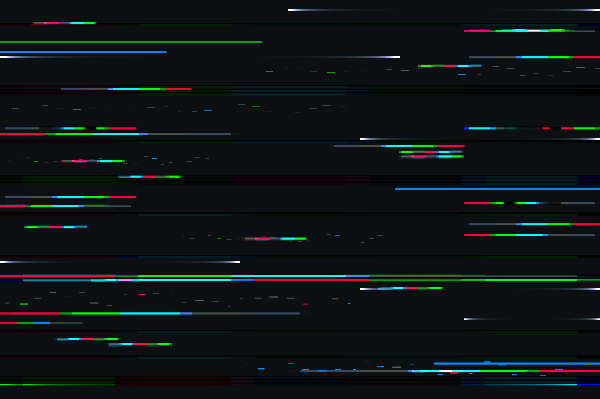
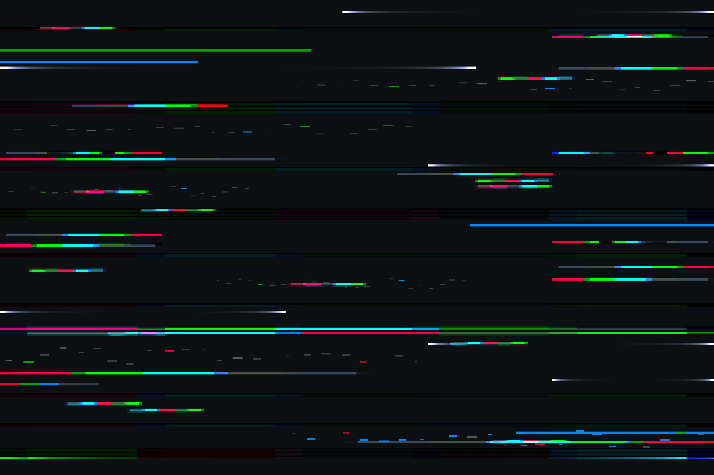

Cyberpunk
Características Principais:
Tecnologia Avançada: Implantes cibernéticos, redes neurais, e realidade virtual fazem parte do cotidiano. Ambiente Urbano: Cidades superpovoadas, neon brilhando em cada esquina e arranha-céus imponentes. Corporatocracia: Mega corporações que possuem mais poder que governos, influenciando todos os aspectos da vida. Anti-Heróis: Personagens marginais que lutam contra o sistema, hackers e renegados em busca de justiça ou sobrevivência